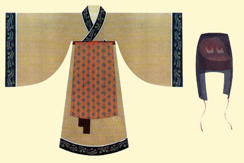
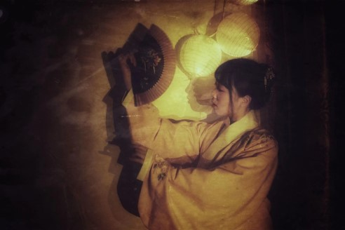
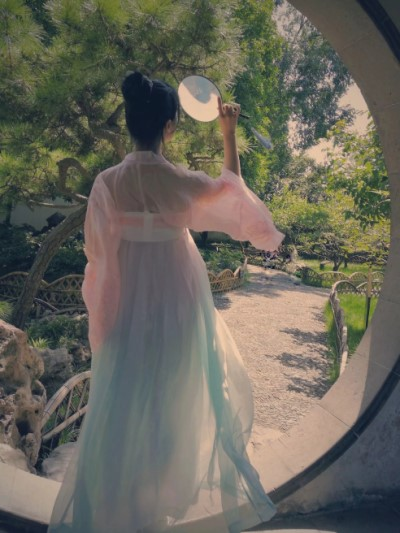

“汉服”不是指“汉朝服饰”，而是指“汉民族的民族服饰”。从黄帝“垂衣裳而治天下”开始，汉民族服饰传统延续了超过3700年的时间。其间汉服随时代变迁发展出了丰富多彩的样式，但其最主要形制，“交领右衽，上衣下裳”的特点却始终没有改变。
汉服的主要特点是交领、右衽，不用扣子，而用绳带系结，给人洒脱飘逸的印象。这些特点都明显有别于其他民族的服饰。汉服有礼服和常服之分。
从形制上看，主要有“上衣下裳”制（裳在古代指下裙）、“深衣”制（把上衣下裳缝连起来）、“襦裙”制（襦，即短衣）等类型。其中，上衣下裳的冕服为帝王百官最隆重正式的礼服；袍服（深衣）为百官及士人常服，襦裙则为妇女喜爱的穿着。普通劳动人民一般上身着短衣，下穿长裤。
汉服在现代生活的用途分为拍照用和日常着装用，拍照用的大多会选用飘逸裙摆长达六米的汉服，类别以齐胸襦裙和魏晋风齐腰襦裙为主，颜色大多鲜艳粉嫩，裙子转起来简直感觉自己变成了小仙女，并且保准走一步踩一下裙子。日常着装的汉服大多颜色低调，强调舒适感与方便，布料以棉麻为主，袖口收缩，裙摆高于脚面，款式多为明制袄裙和褙子、宋裤， 我从刚入坑时疯狂迷恋轻薄透的仙女风汉服的小白渐渐变成了喜欢日常风的大明少女，并且渐渐get到修图的感觉（对自己修的图表示十分满意）。明制汉服温婉沉静的气质实在是太动人心弦!
偶尔还会带着汉服出去旅游，在景点留下美滋滋的照片~现在穿汉服的小姐妹越来越多啦，各种仙服汉服傻傻分不清楚，汉服圈的撕逼也一直没停过， 如果汉服想要像和服那样得到广泛认同和传承，改良是必须的，现在流行的汉服款式基本为古时上层阶级的着装，并不适合日常穿着。若是永远保持汉服最原始的状态，汉服的发展会受到限制，我们 大可去博物馆里观赏它，这样的汉服是没有生命力的。汉服应作为一种服饰来发展，服饰的发展是在顺应时代变化的，从古至今汉服也一直随着审美和当时的环境而变化，例如唐朝以胖为美，唐朝的 服饰多能体现女性丰腴之美，并且一些细节也受胡服的影响而改变；而明朝由于当时处在小冰川期，气候寒冷，明制汉服大多包裹严实且布料厚实。
汉服走上多元化的发展是必然，撕逼无益，还是好好体会汉服里的文化韵味叭。